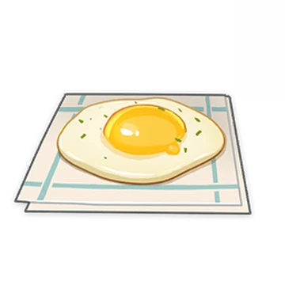

Teyvat Fried Egg

Ingredients:
-
1 Egg
-
Butter or Oil
-
Salt and Pepper to taste
-
Optional: Chives for garnish
Instructions:
-
Heat a pan over medium heat and add a small amount of butter or oil.
-
Crack the egg into the pan and cook until the whites are set but the yolk is still runny, about 2-3 minutes.
-
Place the fried egg on top of a dish.
-
Season with salt and pepper to taste.
-
Serve immediately and enjoy a beautiful Teyvat Fried Egg!
Teyvat Charred Egg